Interactive 3D Physics Models
Gravity & Spacetime
Gravitational Potential Well (2D)
The gravitational potential describes how much energy per unit mass is required to move an object from one point to another in a gravitational field.
Gravitational Potential Well (3D)
A three-dimensional representation of spacetime curvature around a massive object.
Escape Velocity
The minimum velocity needed for an object to escape from gravitational influence.
Compactness Comparison
Compactness measures how close an object is to becoming a black hole.
Gravitational & Tidal Force Fields
Vector fields showing gravitational attraction and tidal stretching/compression.
Spacetime Physics Summary
A comprehensive overview comparing key gravitational properties across astronomical objects.
Orbital Precession (Relativistic Effect)
Relativistic orbital precession - a key prediction of General Relativity confirmed by Mercury.
Precession Animation
Watch the orbit precess and form a rosette pattern over time.
Gravitational Lensing (Light Bending)
Light bends near massive objects - a key prediction of General Relativity.
Light Bending Animation
Watch light rays bend around a massive object in real time.
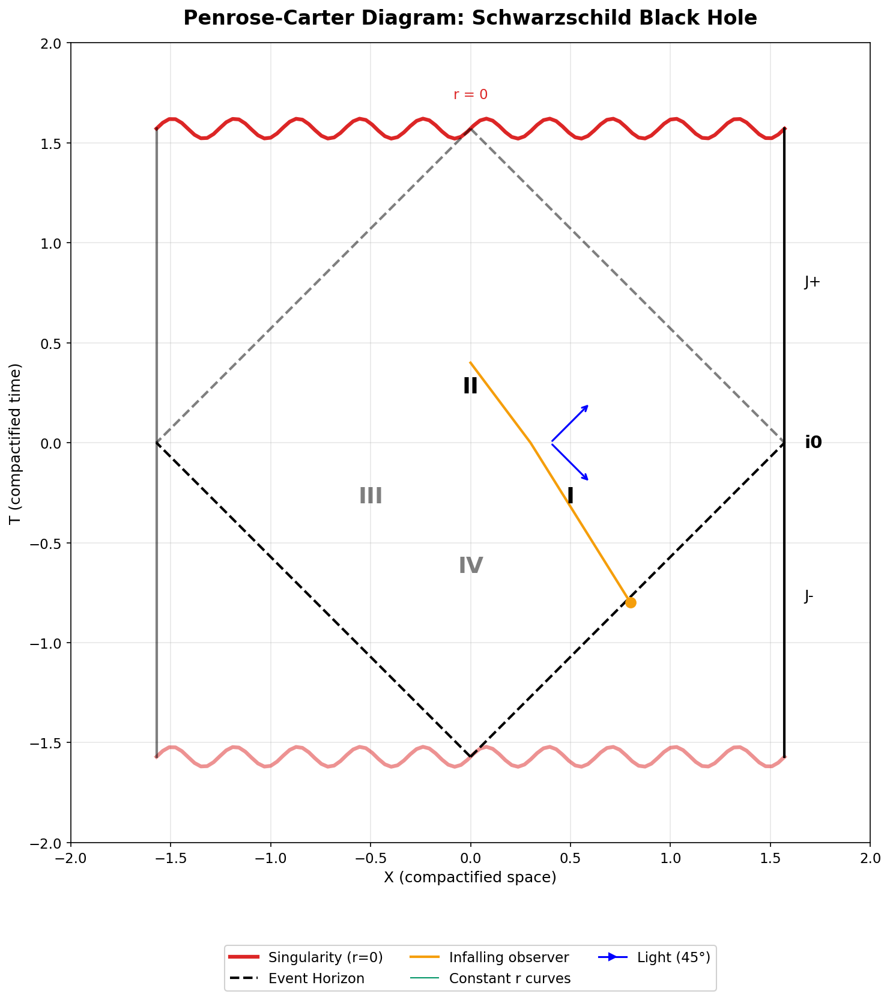
Penrose-Carter Diagram (Schwarzschild Black Hole)
Conformal diagram showing the causal structure of a black hole spacetime.
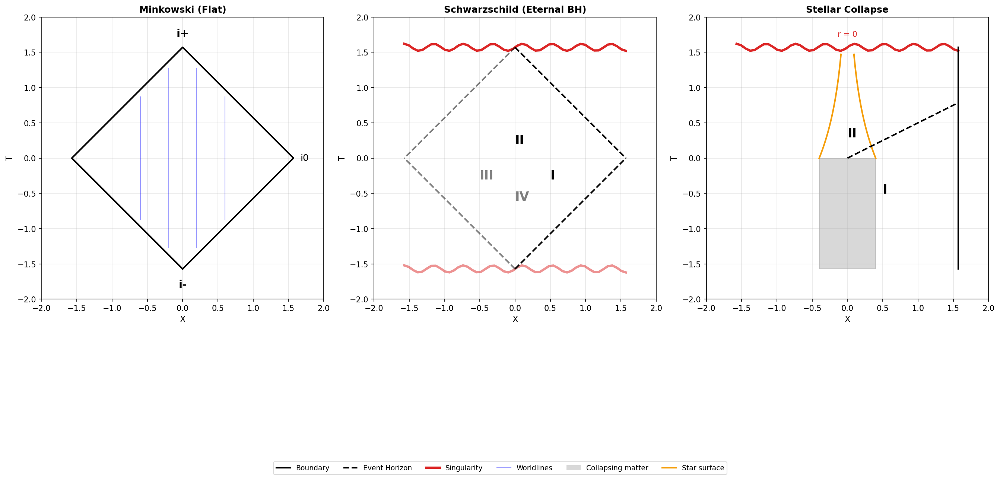
Penrose Diagram Comparison
Comparing the causal structure of flat, black hole, and collapsing spacetimes.
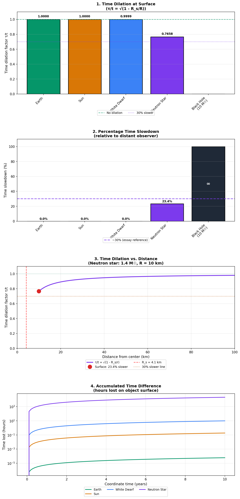
Gravitational Time Dilation
Time runs slower in stronger gravitational fields - confirmed by GPS satellites.
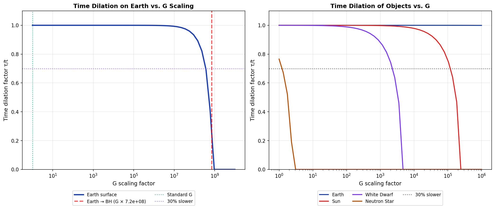
Time Dilation vs G Scaling
How time dilation changes with scaled gravitational constant G.
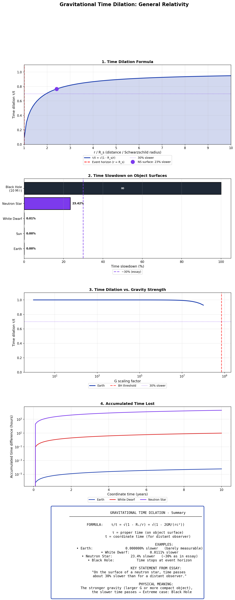
Time Dilation Summary
Comprehensive overview of time dilation.
Key Examples
- Earth: ~0.0000007% slower
- White Dwarf: ~0.02% slower
- Neutron Star: ~30% slower
- Black Hole: Time stops at event horizon
The stronger gravity, the slower time passes.
Quantum Scale Physics
Bohr Radius Scaling
The Bohr radius determines the size of atoms and depends on h-bar squared.
Atom Size Comparison
Visual comparison of hydrogen atom sizes in different universes.
Hydrogen Energy Levels
The quantized energy levels of hydrogen explain atomic spectra.
Quantum-Gravity Connection
The gravitational coupling constant determines gravity's relative strength.
Quantum Physics Summary
Comprehensive comparison of atomic property scaling with Planck's constant changes.
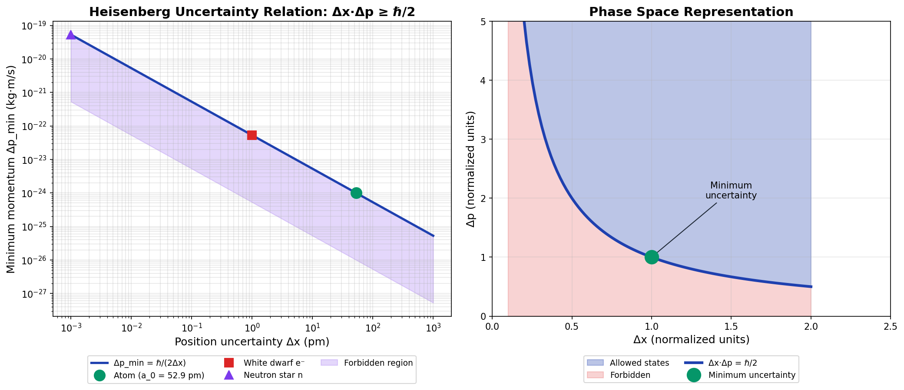
Heisenberg Uncertainty Principle
The fundamental quantum limit that gives rise to degeneracy pressure.
Confinement Velocity ('Restlessness')
Confined particles move faster - the quantum 'restlessness' that creates pressure.
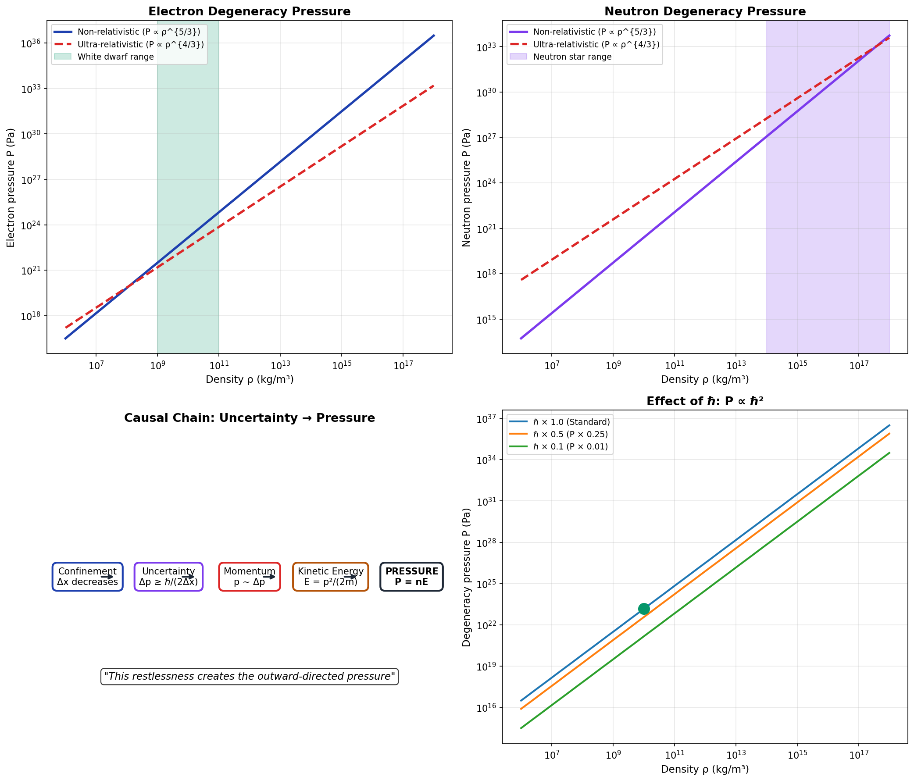
From Uncertainty to Pressure
The causal chain from uncertainty to degeneracy pressure.
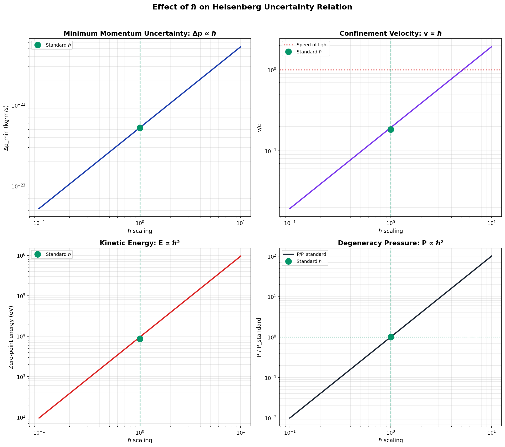
Effect of ℏ on Uncertainty
Degeneracy pressure scales as ℏ² - key to stellar stability.
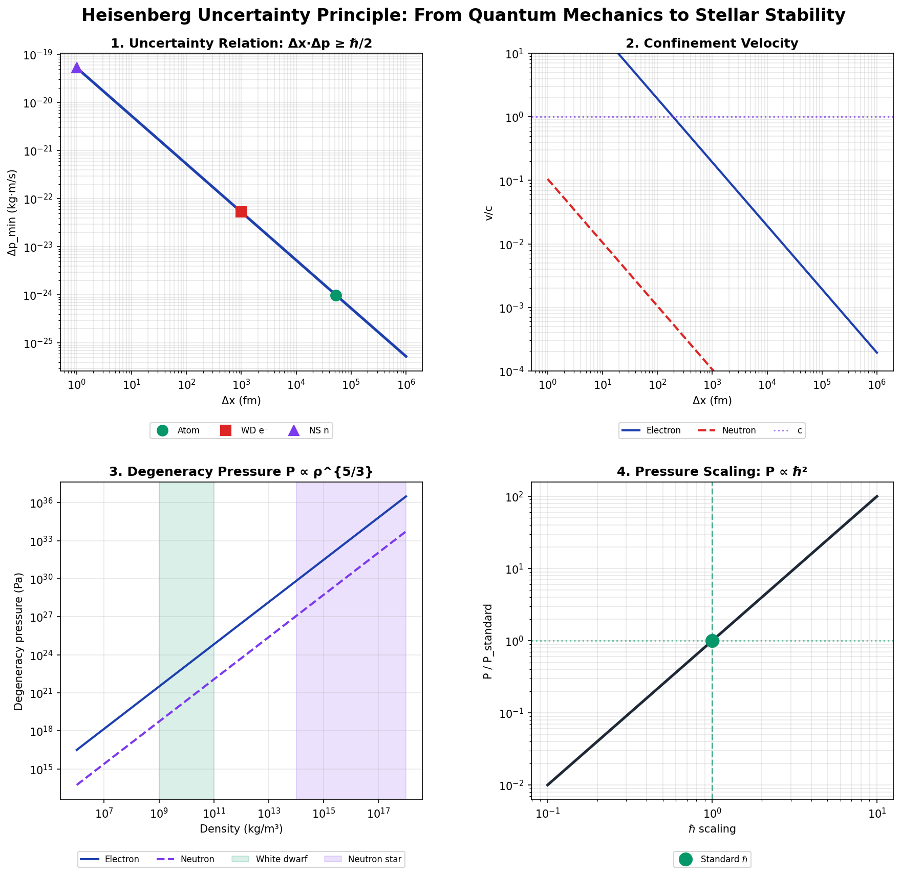
Heisenberg Summary
Complete overview of uncertainty to pressure connection.
The Causal Chain
Δx·Δp ≥ ℏ/2 → Confinement → Momentum → Velocity → Energy → Pressure
Key Insight
Degeneracy pressure scales as ℏ² - prevents stellar collapse!
Fundamental Forces Comparison
Force Strength Comparison
Comparison of the four fundamental forces in our universe.
Force vs Distance
Both forces follow the inverse-square law but differ vastly in magnitude.
Forces Across Scales
The dominant force changes across different length scales.
Scaled Universe: ℏ=0.1
Force comparison with reduced Planck's constant showing gravity dominance.
Thermal Physics
Atmospheric Temperature Profile
The adiabatic lapse rate describes temperature change with altitude.
Degeneracy Temperature
The Fermi temperature determines when quantum effects dominate.
Temperature Effects Summary
Summary of how increased gravity affects temperatures.
Stellar Physics
Chandrasekhar Limit
The maximum mass of a white dwarf supported by electron degeneracy.
Mass-Radius Relation
For white dwarfs, more mass means smaller radius.
Pressure vs Density
The equation of state for degenerate matter.
Compact Stars Summary
Comprehensive overview of white dwarf physics and the Chandrasekhar limit.
TOV Limit (Neutron Star Maximum Mass)
The maximum mass of a neutron star before collapse to black hole.
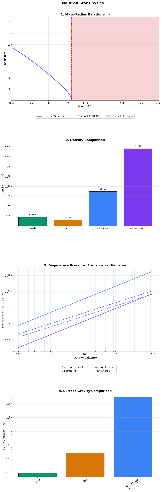
Neutron Star Structure
Extreme properties: density, gravity, time dilation at neutron star surface.
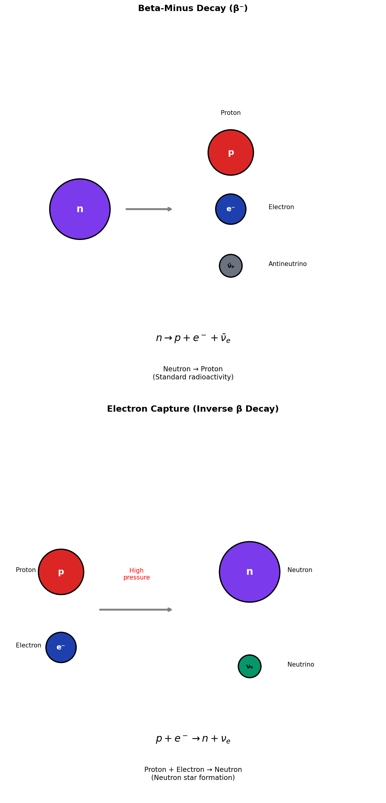
Electron Capture Process
The transition from white dwarf to neutron star via electron capture.
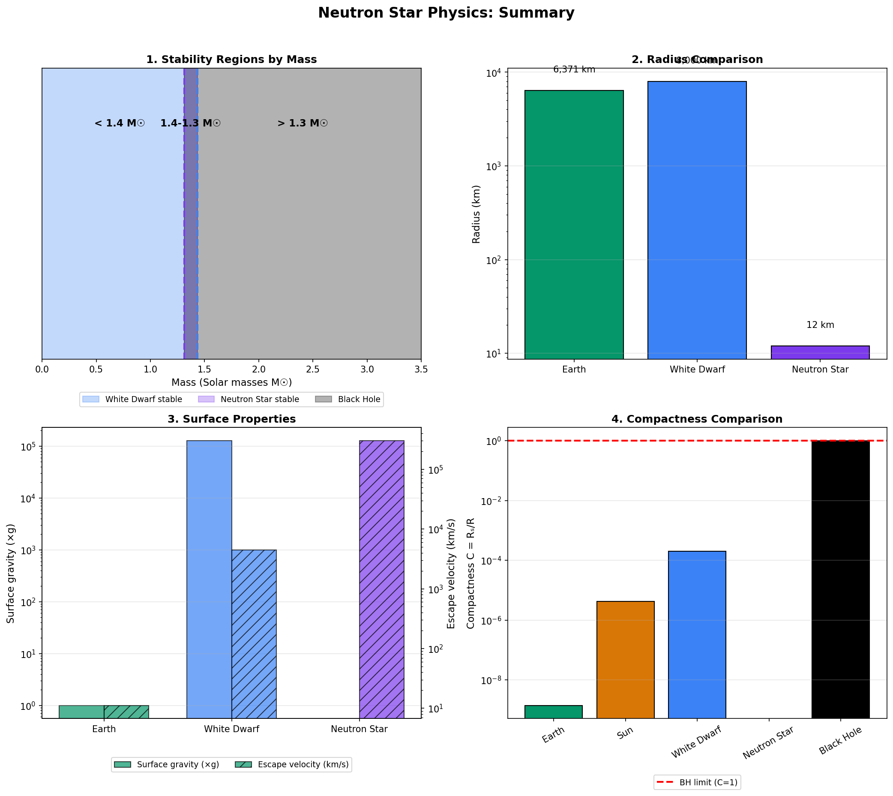
Neutron Star Summary
Complete overview of neutron star physics.
Neutron Star Facts (1.4 M☉)
- Mass: 1.4 M☉ = 2.8×10³⁰ kg
- Radius: ~12 km (city-sized)
- Density: ~10¹⁷ kg/m³
- Surface gravity: ~10¹¹ × Earth g
- Escape velocity: ~33% c
- Time dilation: time ~23% slower
Mass Limits
Ch. Limit: 1.4 M☉ | TOV: ~2.2 M☉
Earth Under Increased Gravity
How Earth would change with stronger gravity.
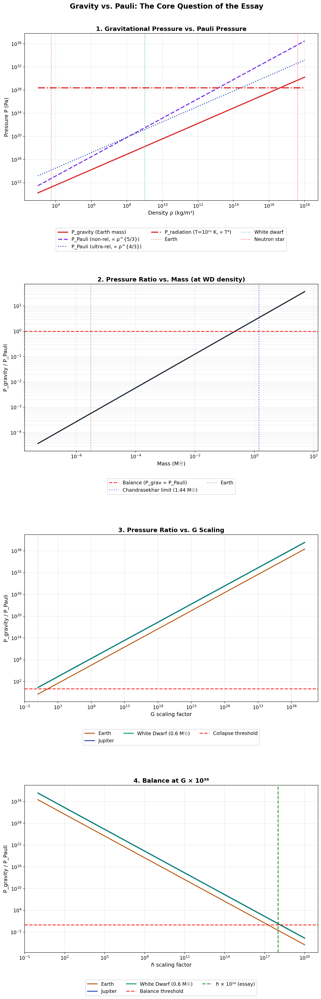
Gravity vs Pauli: The Core Balance
The fundamental balance between gravity and quantum pressure.
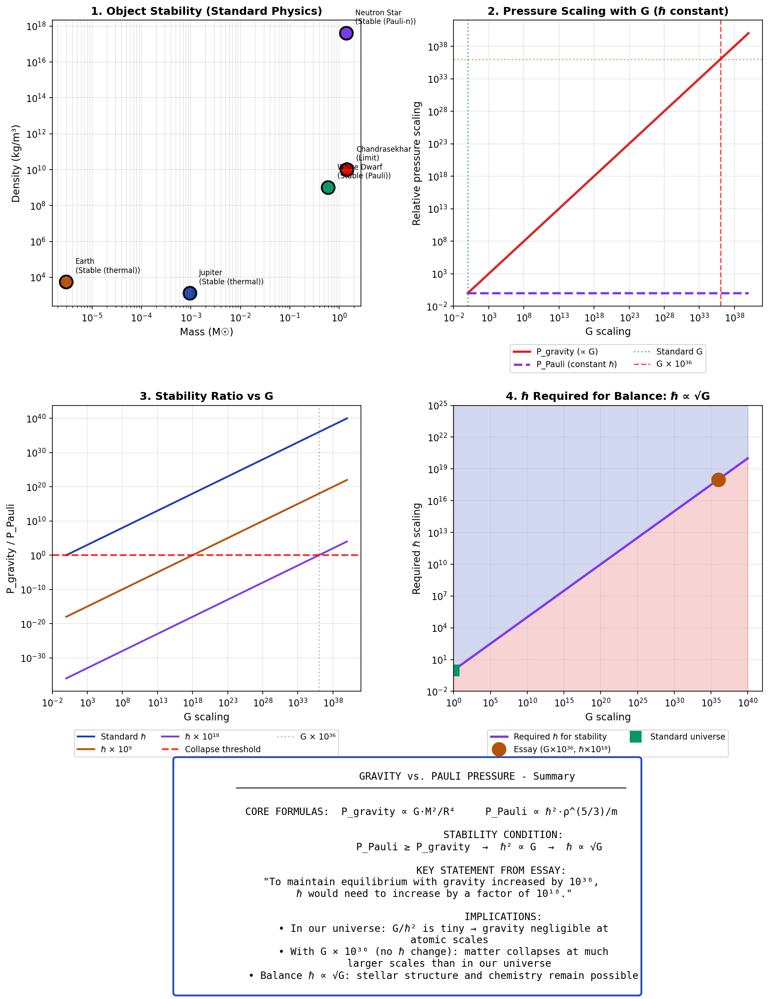
Essay Hypothesis Summary
How changing G or ℏ shifts the gravity-quantum balance.
Core Insight
For stability: ℏ² ∝ G, meaning ℏ ∝ √G
Key Scaling Relations
- G × 10³⁶ → ℏ must × 10¹⁸
- Without ℏ compensation: early collapse
- G/ℏ² sets atomic gravity strength
Implications
G/ℏ² determines gravity's role at atomic scales.